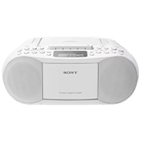
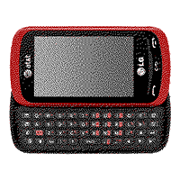
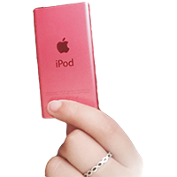
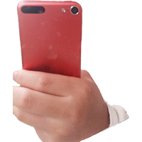

2006 ~ still using
SD Card
If these MP3s were to be re-released today, I would collect them by color because they were my favorite of all the music-listening devices I had. I recall there were five colors, but my aunt gave me the white Mickey Mouse one as a gift. I saw her using it when I was a kid and wanted one so badly that I asked her to give it to me. So, I eventually got it. I still vividly remember listening to it on the bus ride to school. It was a screenless machine, so the music was on shuffle, and I remember the excitement of not knowing what was coming next.

2006
Mixtape
If these MP3s were to be re-released today, I would collect them by color because they were my favorite of all the music-listening devices I had. I recall there were five colors, but my aunt gave me the white Mickey Mouse one as a gift. I saw her using it when I was a kid and wanted one so badly that I asked her to give it to me. So, I eventually got it. I still vividly remember listening to it on the bus ride to school. It was a screenless machine, so the music was on shuffle, and I remember the excitement of not knowing what was coming next.

2007
CD Player
If these MP3s were to be re-released today, I would collect them by color because they were my favorite of all the music-listening devices I had. I recall there were five colors, but my aunt gave me the white Mickey Mouse one as a gift. I saw her using it when I was a kid and wanted one so badly that I asked her to give it to me. So, I eventually got it. I still vividly remember listening to it on the bus ride to school. It was a screenless machine, so the music was on shuffle, and I remember the excitement of not knowing what was coming next.

2008
iRiver T70 MP3 (8GB)
If these MP3s were to be re-released today, I would collect them by color because they were my favorite of all the music-listening devices I had. I recall there were five colors, but my aunt gave me the white Mickey Mouse one as a gift. I saw her using it when I was a kid and wanted one so badly that I asked her to give it to me. So, I eventually got it. I still vividly remember listening to it on the bus ride to school. It was a screenless machine, so the music was on shuffle, and I remember the excitement of not knowing what was coming next.
2009
Mickey MP3 (1GB)
If these MP3 players were to be re-released today, I would collect them by color because they were my favorite of all the music-listening devices I had. I recall there were five colors, but my aunt gave me the white Mickey Mouse one as a gift. I saw her using it when I was a kid and wanted one so badly that I asked her to give it to me. So, I eventually got it. I still vividly remember listening to it on the bus ride to school. It was a screenless machine, so the music was on shuffle, and I remember the excitement of not knowing what was coming next. Back then, my dad would download music from his computer to this MP3 player. Unfortunately, I only used this device for about three months. I accidentally put this into the laundry machine, and it broke completely when I took it out; the ears were dangling apart, and I cried a lot. But my parents didn't get me a new one since it was my fault for not checking my pockets. I learned this lesson, and now I check my pockets whenever I do my laundry.

2010
iPhone 3GS (16GB)
When I first saw this phone as a child, it reminded me of a bar of white soap. This phone was supposed to be my mother’s, but I asked her if I could carry it to school to listen to music and watch fun videos with my friends. Since the phone I had during this time didn’t play music or YouTube, the iPhone 3Gs was a dream come true for me and my friends. I could take it to school for about a month before my mom activated this new phone. Even though it was a long time ago, I still remember when all my friends from other classes came to my class during the break to watch or listen to music together. We even played a few games; our favorite was Angry Bird. Since most students didn’t have a smartphone in 2010, this device was a whole new world for all of us and gave us new experiences.
2012
Galaxy M (32GB)
Believe it or not, Galaxy M was my first and last Samsung phone. My dad finally bought me my first smartphone since the 2G phone I used broke when I was playing with my friends after school (it was an accident, not intended!). Additionally, my older sister got her first smartphone during 4th grade, so I had to wait until 4th grade to be ‘fair’ (my sister thought it was unfair if I got it before 4th grade). With this device, I listened to many songs and played several games, but most importantly, I recorded many things. I remember taking a photo of a dandelion every week to see how much it spread after each week. I also enjoyed recording a song that I wrote using voicememo. I played piano and violin back then and tried recording a composed song with this phone. Sadly, I couldn’t find this device after returning to Korea in 2018. But it will still be in my memory where I stored all my innocent and naive mind as a child.

May 2013
LG Slider (32GB)
LG Red Slider was the first phone I got in Irvine, California. After my mom saw my sister and I started to become addicted to social media, games, and YouTube videos, she decided to limit the use of smart devices to prevent it from getting worse. The only smart device we had was an iPad, which we shared. I hated this phone. As a teenager, I was unsatisfied with this device since I had already experienced how comfortable (and looked cool) it was to have a smartphone. I could at least listen to music that I downloaded from our computer. I didn’t take many photos with this device. Even though I resented my mother for getting this phone back then, now I know why she got this phone for us. She protected us from wasting precious time on small devices impacting our height, eyesight, sleeping patterns, and studying.

2014
iPod nano 7th generation (16GB)
The iPod Nano was the best MP3 player I ever had. I started collecting all the devices I used since I got my first iPod because I felt a strong bond or connection with the devices that stored moments of my life and memories.

September 29, 2014
iPod touch 5th generation (16GB)
If these MP3s were to be re-released today, I would collect them by color because they were my favorite of all the music-listening devices I had. I recall there were five colors, but my aunt gave me the white Mickey Mouse one as a gift. I saw her using it when I was a kid and wanted one so badly that I asked her to give it to me. So, I eventually got it. I still vividly remember listening to it on the bus ride to school. It was a screenless machine, so the music was on shuffle, and I remember the excitement of not knowing what was coming next.
March 12, 2016
iPhone 6S (16GB)
If these MP3s were to be re-released today, I would collect them by color because they were my favorite of all the music-listening devices I had. I recall there were five colors, but my aunt gave me the white Mickey Mouse one as a gift. I saw her using it when I was a kid and wanted one so badly that I asked her to give it to me. So, I eventually got it. I still vividly remember listening to it on the bus ride to school. It was a screenless machine, so the music was on shuffle, and I remember the excitement of not knowing what was coming next.

Oct 24, 2017
iPhone 8 Plus (64GB)
If these MP3s were to be re-released today, I would collect them by color because they were my favorite of all the music-listening devices I had. I recall there were five colors, but my aunt gave me the white Mickey Mouse one as a gift. I saw her using it when I was a kid and wanted one so badly that I asked her to give it to me. So, I eventually got it. I still vividly remember listening to it on the bus ride to school. It was a screenless machine, so the music was on shuffle, and I remember the excitement of not knowing what was coming next.

April 8, 2019
iPhone XS Max (128GB)
If these MP3s were to be re-released today, I would collect them by color because they were my favorite of all the music-listening devices I had. I recall there were five colors, but my aunt gave me the white Mickey Mouse one as a gift. I saw her using it when I was a kid and wanted one so badly that I asked her to give it to me. So, I eventually got it. I still vividly remember listening to it on the bus ride to school. It was a screenless machine, so the music was on shuffle, and I remember the excitement of not knowing what was coming next.
Nov 21, 2021
iPhone 13 Pro Max (512GB)
If these MP3s were to be re-released today, I would collect them by color because they were my favorite of all the music-listening devices I had. I recall there were five colors, but my aunt gave me the white Mickey Mouse one as a gift. I saw her using it when I was a kid and wanted one so badly that I asked her to give it to me. So, I eventually got it. I still vividly remember listening to it on the bus ride to school. It was a screenless machine, so the music was on shuffle, and I remember the excitement of not knowing what was coming next.